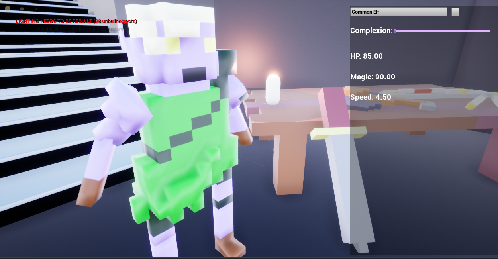
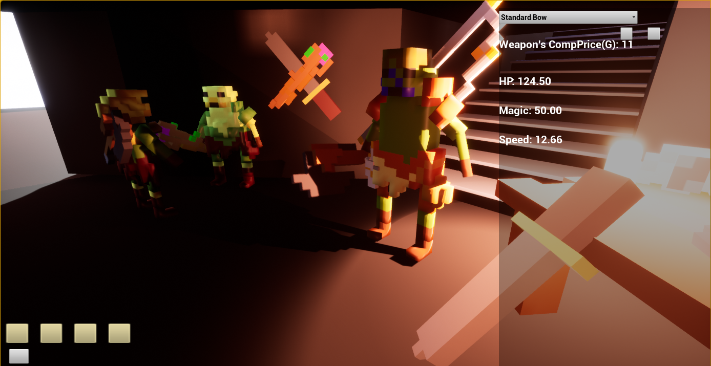
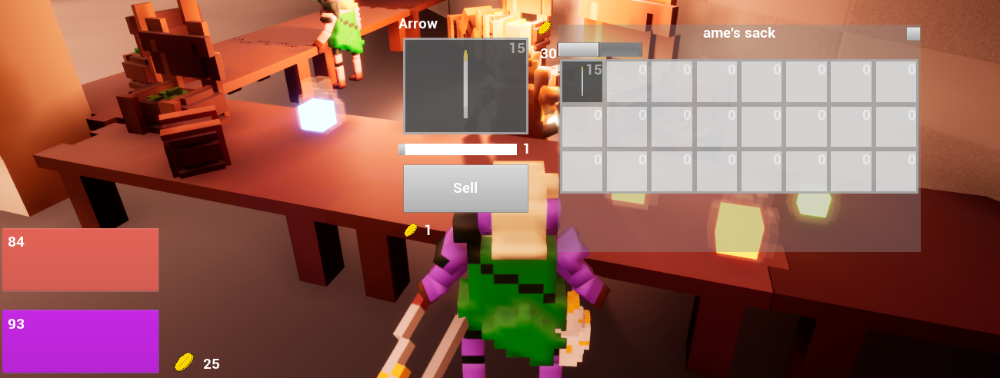
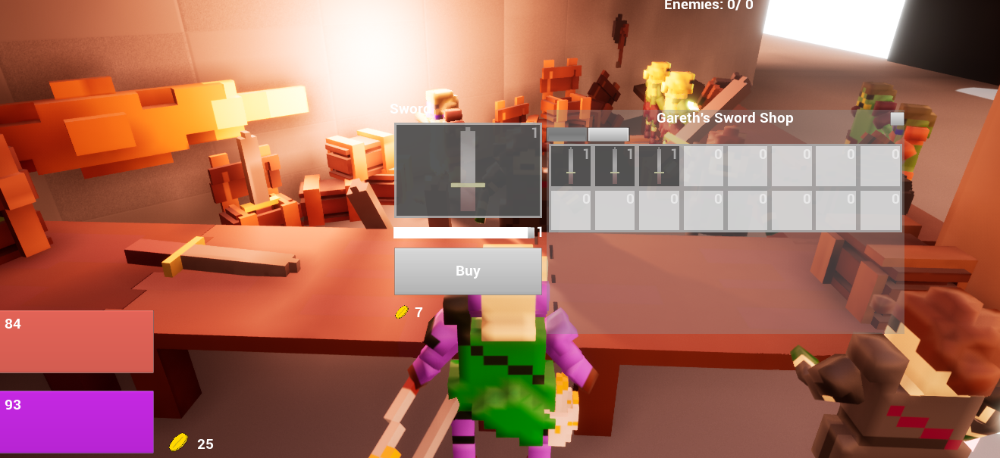
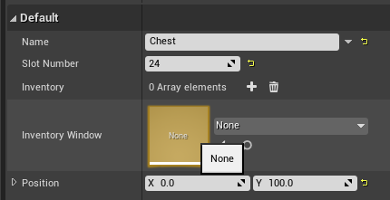
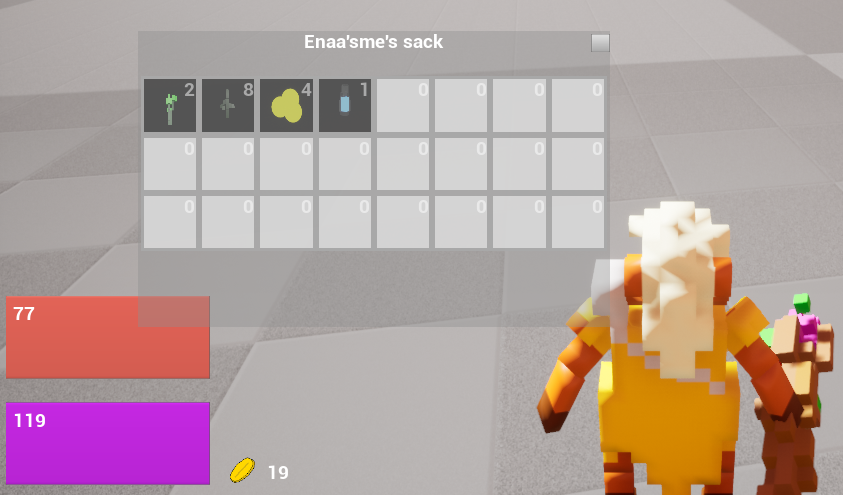
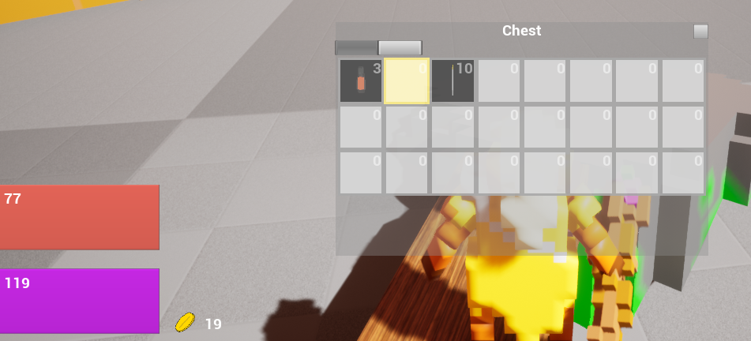
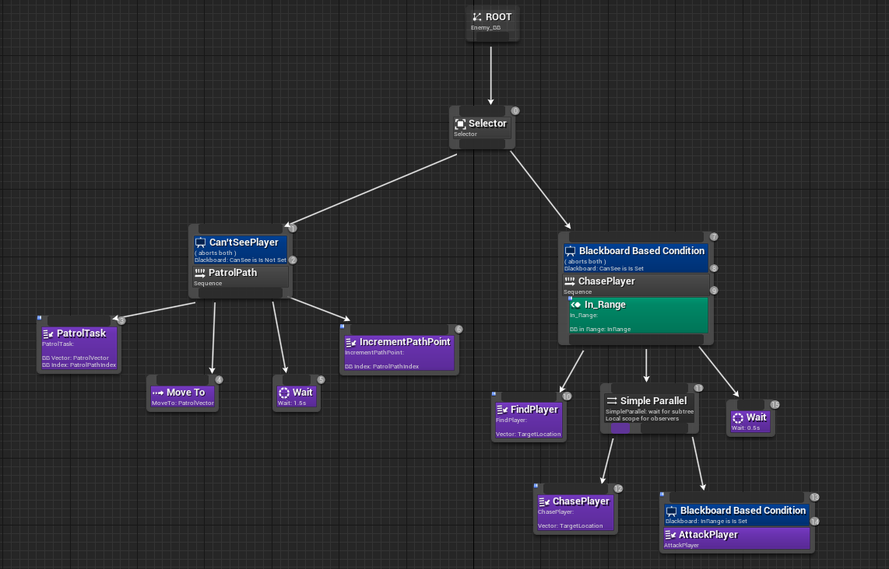
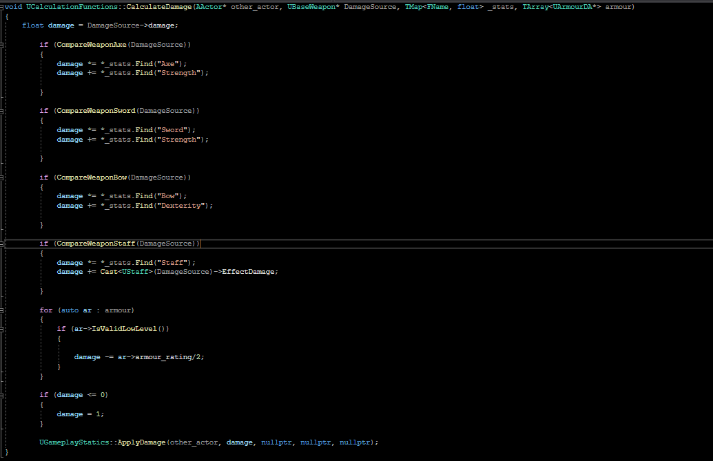
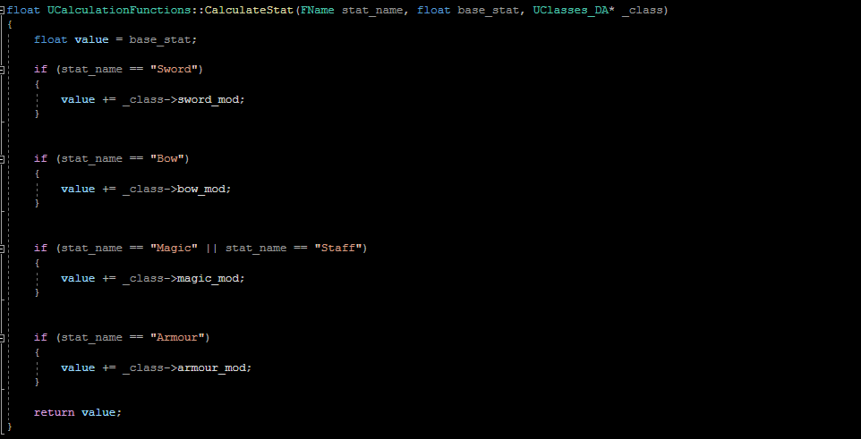

RPG Arena
An Unreal mini RPG game
On my Mastered bootcamp we had sixteen weeks to produce portfolio pieces, and I took this
time to create a demo gameplay loop to show off my systems and importantly how they work
together. Below is the blog, screenshots, and code snippets from development on this project.
Game Overview
The game is a small scale action RPG set in a gladitorial arena, with an array of classes and races with unique abilities for unique play styles from interesting magical abilities to sword combat and in between. There will be weapons and armour upgrades to buy as you level up and improve your skills, and a variety of people to complete quests for.
There are a variety of species and classes that are all available from the character creation screen at the beginning of the game, as well as an additional weapon type. You can fully customise the race of the character including classic fantasy races like elves, orcs and goblins, as well as a amphibian like race. Primary weapon types are given based on classes with the standard wizard, warrior, and archer classes and a spearman class, and an additional weapon can be added at the character creation screen or during the game.

The core of the gameplay loop is to fight through waves of enemies which provide you the XP needed to level up and improve your skills, and chose perks from your classes' skill tree, as well as earn money to spend on equipment in the shop under the arena. Waves of enemies come in several different patterns you can pick from, and randomly generated enemies are created to fit the types specified in the spawn pattern. From this you fight as many waves as you can while leveling up and improving your weapons and armour and increasing your skills.

Engine and Development
The game is made in Unreal Engine 4.27 and the characters are all voxel based, and made in MagicaVoxel. This made making simple models with variations to colour quick and much easier than modelling them from scratch while also feeding into the charcter creator section of the game. I also used it to create items/equipment and the obstacles in the world that the player can interact with and stand on.The game also is constructed on a mixture of both Blueprints and C++ code, Unreal's Blueprint system works well for rapid prototyping of systems and visually planning out a feature and is much easier to learn Unreal specific features from. The C++ code is particularly useful in areas that the Blueprints can't handle too well such as calculation functions, which can get messy and working with Blueprints, and for more advanced memory management techniques.
Mechanics and Features
Combat
Combat has two different attack types based on which weapon is being used. The Axe and Sword items preform melee damage, Bows shoot projectiles, and staves shoot a projectile while also having a melee hitbox as well. Spears were added as well that have a melee range and can also be thrown as a projectile. Players and Enemies can also can wear armour pieces that reduce damage from most damage sources, spells don't follow this principle.
Physical projectiles such as arrows from a bow or a thrown spear require a supply of ammunition in your inventory, but can also be retrieved when they land on the ground or can enter an enemies' inventory when hit. Spells will require enough magic in order to cast, and can be recovered by potions or waiting.
Starting weapons are determined by class as well as a free choice of your bonus weapon, and further equipment such as new weapons and armour can be found in loot dropped by enemies. Health and Magic regenerate over time as well when under certain conditions and can be boosted by potions and some ingredients. The player has two active slots for all their weapons, which can be freely swapped between, and four slots for each armour piece.
Killing enemies earns the player extra gold and XP to acquire extra equipment from the shops, and also has a chance of dropping a temporary chest that player look through to pick up items for their own inventory.-
Shops
Shops have their own inventory system that you can peek into on each shop keeper and an additional tab to look at your own inventory. There is also a quantity slider and a buy/sell button allow for a transaction between the player and shop keeper.

Using a gold currency the player can buy equipment or sell equipment to earn more in order to purchaes new items such as additional ammo for their bow or useful potions or armour. Tiers and upgraded pieces of armour and weaponry are also planned to be made available.

Inventory/Pick ups
The inventory system is a collection of slots that store data from items which for each instance of the component on an object can be completely customisable with the amount of space it contains and where the UI anchors to etc.

The inventory can be prepoulated fairly easily and can easily be given a randomiser function for additional functionality. Since inventories populated by enemy loot drops work on a chance to contain the item system something similiar can be done picking from the pool of items or picking items from a tier.


Stats & level ups
Code
A behaviour tree that controls which states the enemy AI are in, their patrolling state or their target states, and to attack once in range:
Damange calculations based on the factors such as weapon used, the skills of the character using it, the armour equipped on the target which can dynamically change through other systems that the player engages with:

These systems include the level up system which updates the player's stats when enough XP has been accumulated, the modular armour and weapon equipment system which changes what and how many pieces of armour and weapons the player has currently equipped.
In addition there is a minimal damage check to prevent erronious calculations from making it through to the damage applied.
I used C++ to handle the stat calculation systems, in a completely class independant method which allows for it to be made applicable to enemies and allies in addition to the player.
